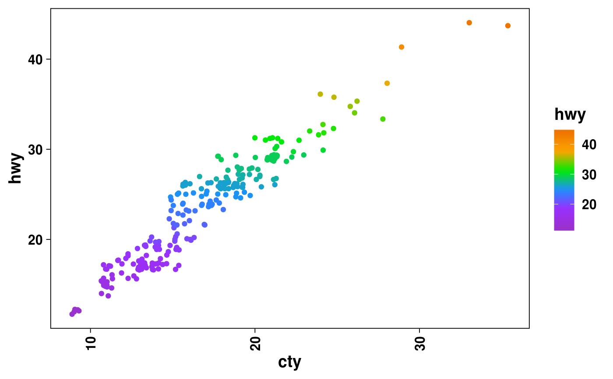
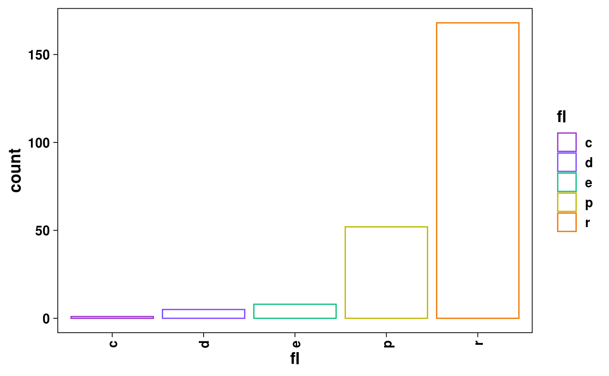
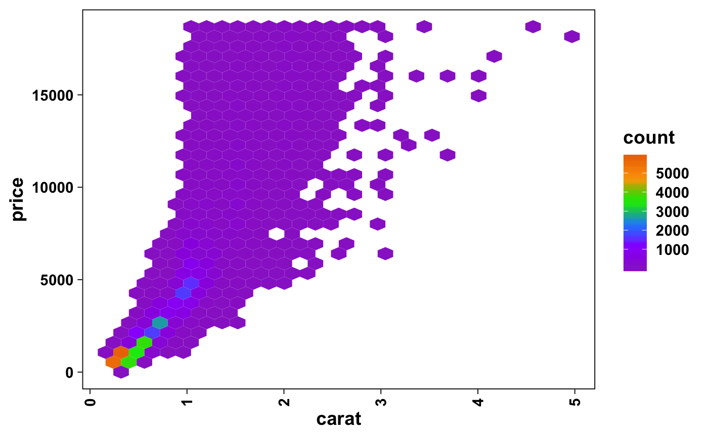
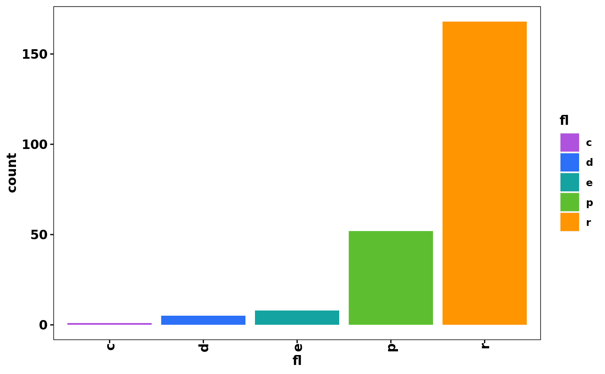
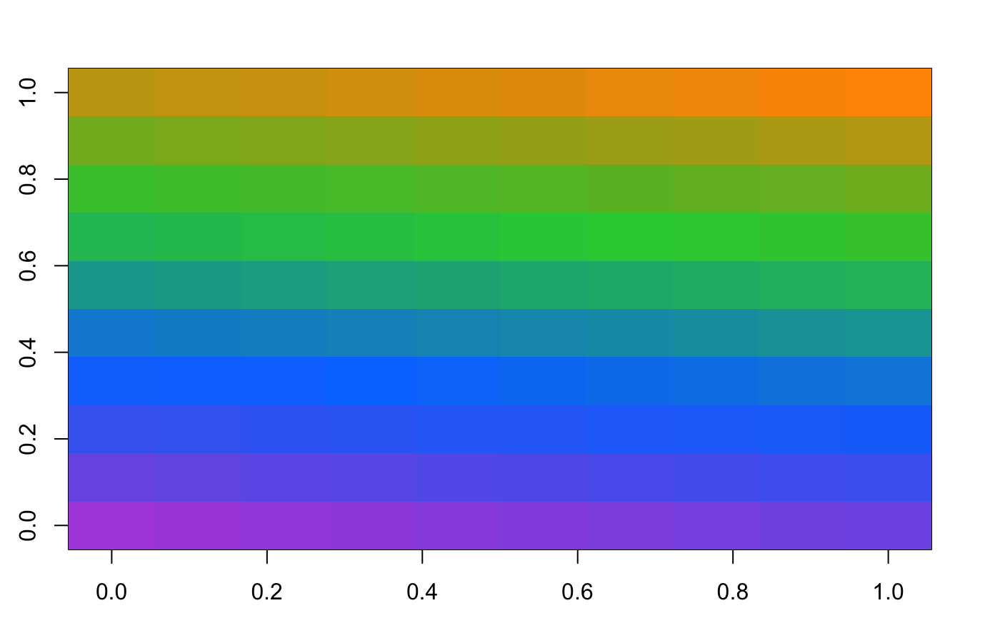

Four color gradient defined by purple, blue, green, orange.
synesthesia( n = 256L, palette = c("lightPalette", "darkPalette", "draculaPalette", "macOSLightPalette", "macOSDarkPalette", "iOSLightPalette", "iOSDarkPalette") ) synesthesia_pal( palette = c("lightPalette", "darkPalette", "draculaPalette", "macOSLightPalette", "macOSDarkPalette", "iOSLightPalette", "iOSDarkPalette") ) scale_colour_synesthesia_c( ..., na.value = "grey50", guide = "colourbar", palette = c("lightPalette", "darkPalette", "draculaPalette", "macOSLightPalette", "macOSDarkPalette", "iOSLightPalette", "iOSDarkPalette") ) scale_color_synesthesia_c( ..., na.value = "grey50", guide = "colourbar", palette = c("lightPalette", "darkPalette", "draculaPalette", "macOSLightPalette", "macOSDarkPalette", "iOSLightPalette", "iOSDarkPalette") ) scale_colour_synesthesia_d( ..., palette = c("lightPalette", "darkPalette", "draculaPalette", "macOSLightPalette", "macOSDarkPalette", "iOSLightPalette", "iOSDarkPalette") ) scale_color_synesthesia_d( ..., palette = c("lightPalette", "darkPalette", "draculaPalette", "macOSLightPalette", "macOSDarkPalette", "iOSLightPalette", "iOSDarkPalette") ) scale_fill_synesthesia_c( ..., na.value = "grey50", guide = "colourbar", palette = c("lightPalette", "darkPalette", "draculaPalette", "macOSLightPalette", "macOSDarkPalette", "iOSLightPalette", "iOSDarkPalette") ) scale_fill_synesthesia_d( ..., palette = c("lightPalette", "darkPalette", "draculaPalette", "macOSLightPalette", "macOSDarkPalette", "iOSLightPalette", "iOSDarkPalette") )
| n |
|
|---|---|
| palette |
|
| ... | Additional arguments. |
| na.value |
|
| guide |
|
character or ggproto.
A little bit of an acid trip, especially when used for heatmaps.
Updated 2019-09-13.
Adapted from viridis color palette:
viridis::scale_color_viridis_c().
viridis::scale_color_viridis_d().
viridis::scale_fill_viridis_c().
viridis::scale_fill_viridis_d().
Useful color palette URLs:
http://www.stat.columbia.edu/~tzheng/files/Rcolor.pdf
https://matplotlib.org/tutorials/colors/colormaps.html
http://colorbrewer2.org/
http://colorspace.r-forge.r-project.org/
http://hclwizard.org/
https://developer.apple.com/design/human-interface-guidelines/
Additional color palette functions that may be relevant:
colorRamps::matlab.like(), colorRamps::matlab.like2().
library(ggplot2) theme_set(acid_theme_light()) ## Color, continuous. cc <- ggplot(mpg, aes(cty, hwy)) + geom_jitter(aes(color = hwy)) cc + scale_color_synesthesia_c()## Color, discrete. cd <- ggplot(mpg, aes(fl)) + geom_bar(aes(color = fl), fill = NA) cd + scale_color_synesthesia_d()## Fill, continuous. fc <- ggplot(diamonds, aes(carat, price)) + geom_hex() fc + scale_fill_synesthesia_c()## Fill, discrete. fd <- ggplot(mpg, aes(fl)) + geom_bar(aes(fill = fl)) fd + scale_fill_synesthesia_d()## Base color. par(mar = rep(2.5, times = 4L)) image( matrix(data = seq_len(100L), nrow = 10, ncol = 10), col = synesthesia() )